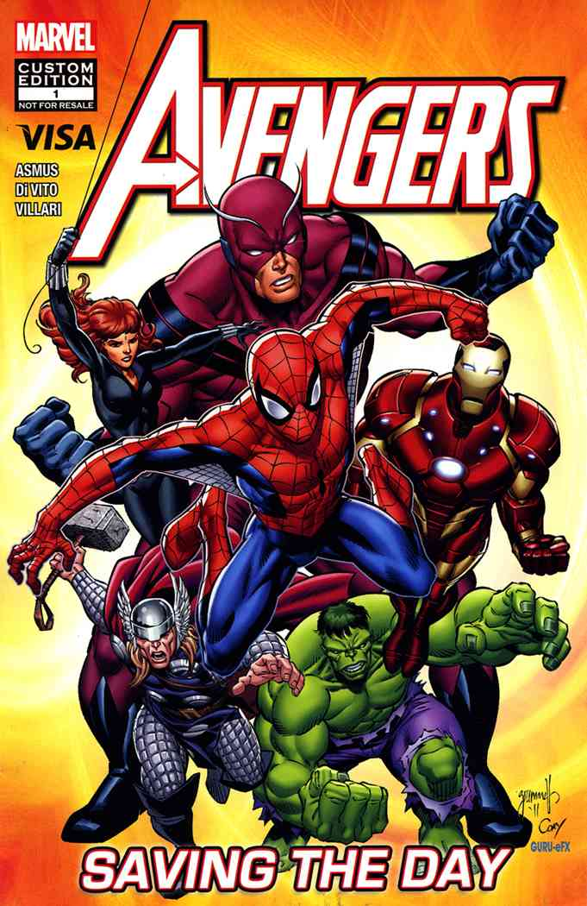
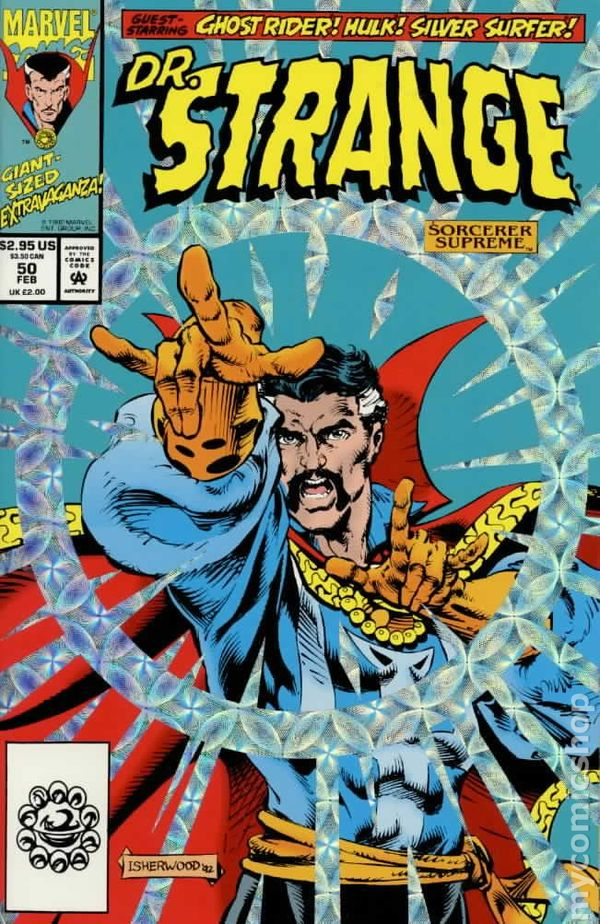
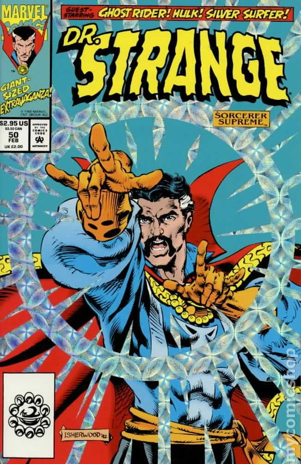

Stan Lee
(1922-2018)

Stan Lee was an American comic-book writer, editor, and publisher, who was executive vice president and publisher of Marvel Comics.
Stan was born in New York City, to Celia (Solomon) and Jack Lieber, a dress cutter. His parents were Romanian Jewish immigrants. Lee co-created Spider-Man, the Hulk, Doctor Strange, the Fantastic Four, Iron Man, Daredevil, Thor,
the X-Men, and many other fictional characters, introducing a thoroughly shared universe into superhero comic books. In addition, he challenged the comics' industry's censorship organization, the Comics Code Authority, indirectly
leading to it updating its policies. Lee subsequently led the expansion of Marvel Comics from a small division of a publishing house to a large multimedia corporation.
He had cameo appearances in many Marvel film and television projects, with many yet to come, posthumously. A few of these appearances are self-aware and sometimes reference Lee's involvement in the creation of certain characters. On 16 July 2017, Lee was named a Disney Legend, a hall of fame program that recognizes individuals who have made an extraordinary and integral contribution to The Walt Disney Company.
Stan Lee's Superhero Comic Book-Based Movies
Avengers

Doctor Strange
Ant Man
Deadpool
{kind=link}

Synopsis: When Thor's evil brother, Loki (Tom Hiddleston), gains access to the unlimited power of the energy cube called the Tesseract, Nick Fury (Samuel L. Jackson), director of S.H.I.E.L.D., initiates a superhero recruitment effort to defeat the unprecedented threat to Earth. Joining Fury's "dream team" are Iron Man (Robert Downey Jr.), Captain America (Chris Evans), the Hulk (Mark Ruffalo), Thor (Chris Hemsworth), the Black Widow (Scarlett Johansson) and Hawkeye (Jeremy Renner).
Grab Your Free Ticket Now!
 

{kind=link}
Synopsis: Dr. Stephen Strange's (Benedict Cumberbatch) life changes after a car accident robs him of the use of his hands. When traditional medicine fails him, he looks for healing, and hope, in a mysterious enclave. He quickly learns that the enclave is at the front line of a battle against unseen dark forces bent on destroying reality. Before long, Strange is forced to choose between his life of fortune and status or leave it all behind to defend the world as the most powerful sorcerer in existence.
Grab Your Free Ticket Now!


Synopsis: Forced out of his own company by former protégé Darren Cross, Dr. Hank Pym (Michael Douglas) recruits the talents of Scott Lang (Paul Rudd), a master thief just released from prison. Lang becomes Ant-Man, trained by Pym and armed with a suit that allows him to shrink in size, possess superhuman strength and control an army of ants. The miniature hero must use his new skills to prevent Cross, also known as Yellowjacket, from perfecting the same technology and using it as a weapon for evil.
Grab Your Free Ticket Now!


Synopsis: Wade Wilson (Ryan Reynolds) is a former Special Forces operative who now works as a mercenary. His world comes crashing down when evil scientist Ajax (Ed Skrein) tortures, disfigures and transforms him into Deadpool. The rogue experiment leaves Deadpool with accelerated healing powers and a twisted sense of humor. With help from mutant allies Colossus and Negasonic Teenage Warhead (Brianna Hildebrand), Deadpool uses his new skills to hunt down the man who nearly destroyed his life.
Grab Your Free Ticket Now!
Meet the Team behind iNSPIRE | Stan Lee

Mr. X
Bos
Just because someone stumbles and loses their path, doesn't mean they can't be saved
-Prof. Charles Xavier